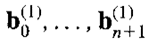
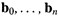
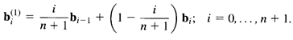
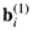
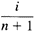
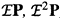
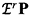
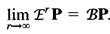

„Degree elevation” увеличава степента на кривата на Bézier без да променя формата и. Основната идея на повишаването на степента на криви на Bézier е зададената полиномиална крива от степен n да представим като полином от степен n + 1. За целта трябва да определим контролен полигон с върхове  , който описва същата крива, зададена първоначално с полигон  . Формулата за получаване на новите въхове: 
Тоест новите върхове  се получават от старите въхове чрез линейна интерполация със стойност на памаетъра  .
Възможно е да повторим процеса на повишаване на степента многократно. Нека оригиналният ни полигон е P – при повишаване на степента последователно, ще получим полигони  и т.н. Ако повторим този процес r пъти, ще получим полигон . Може да се докаже, че  Тоест с увеличаване на степента на полигона, той започва да се стреми към кривата, определна от началния полигон.